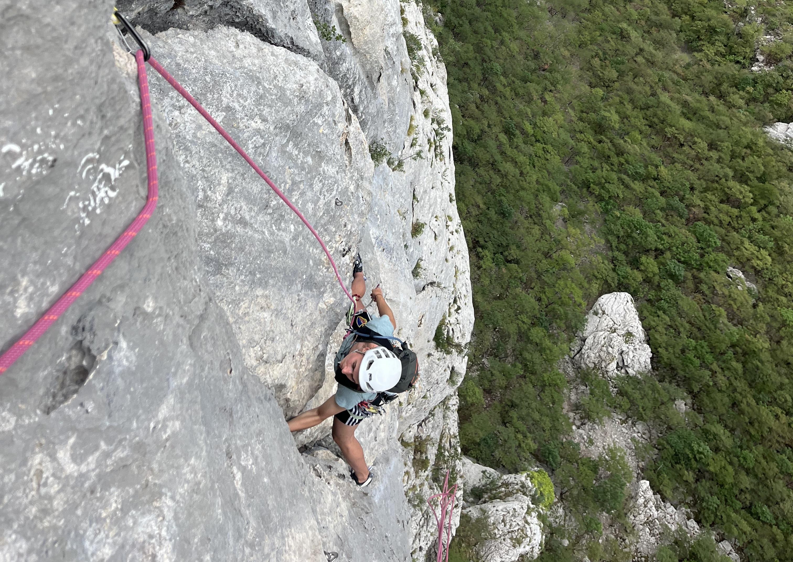

Oktober 2026
Montenegro, Peaks of the Balkans & Tirana
Berge, Grenzen, Welpen und weiterhin genug Ajvar.
Ausgabe lesen →
September 2026
Kroatien & Blagaj
Küste, Meer und die Quelle der Buna.
Ausgabe lesen →Der Newsletter – alle Ausgaben
Berge, Grenzen, Welpen und weiterhin genug Ajvar.
Ausgabe lesen →
Küste, Meer und die Quelle der Buna.
Ausgabe lesen →